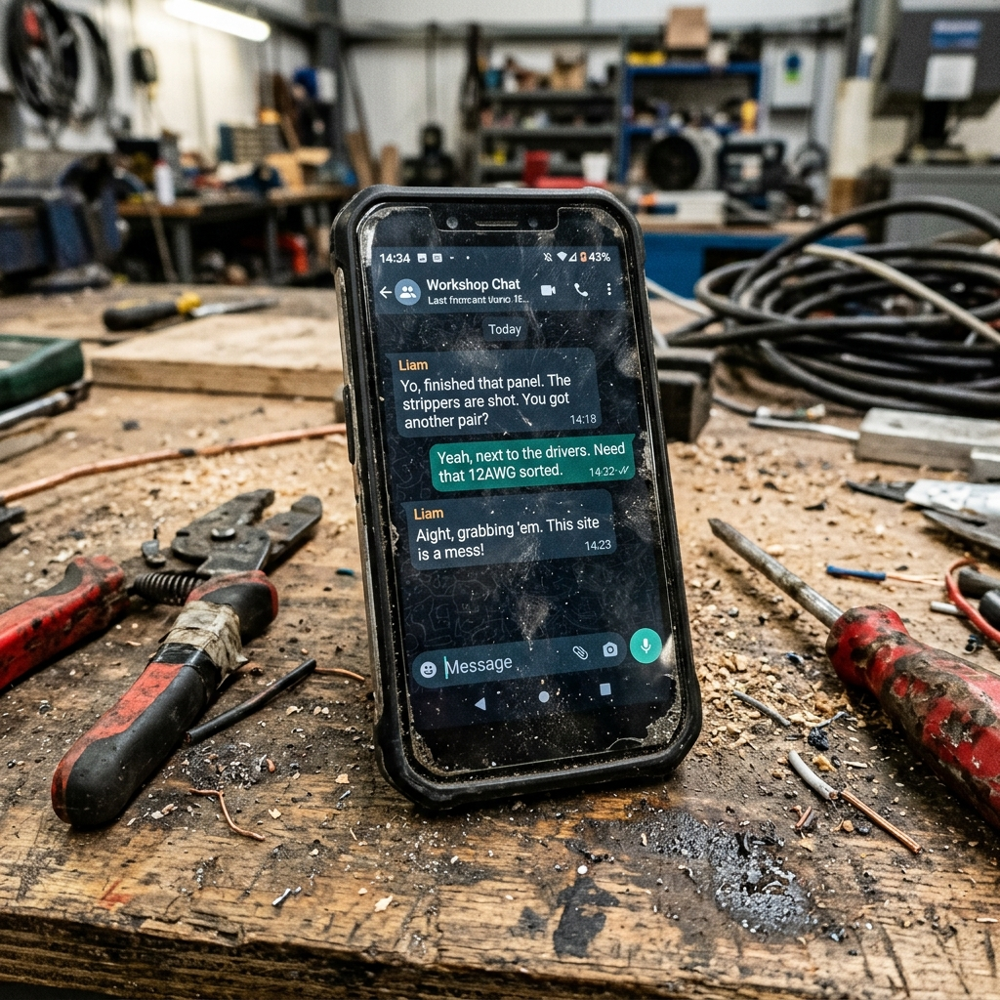
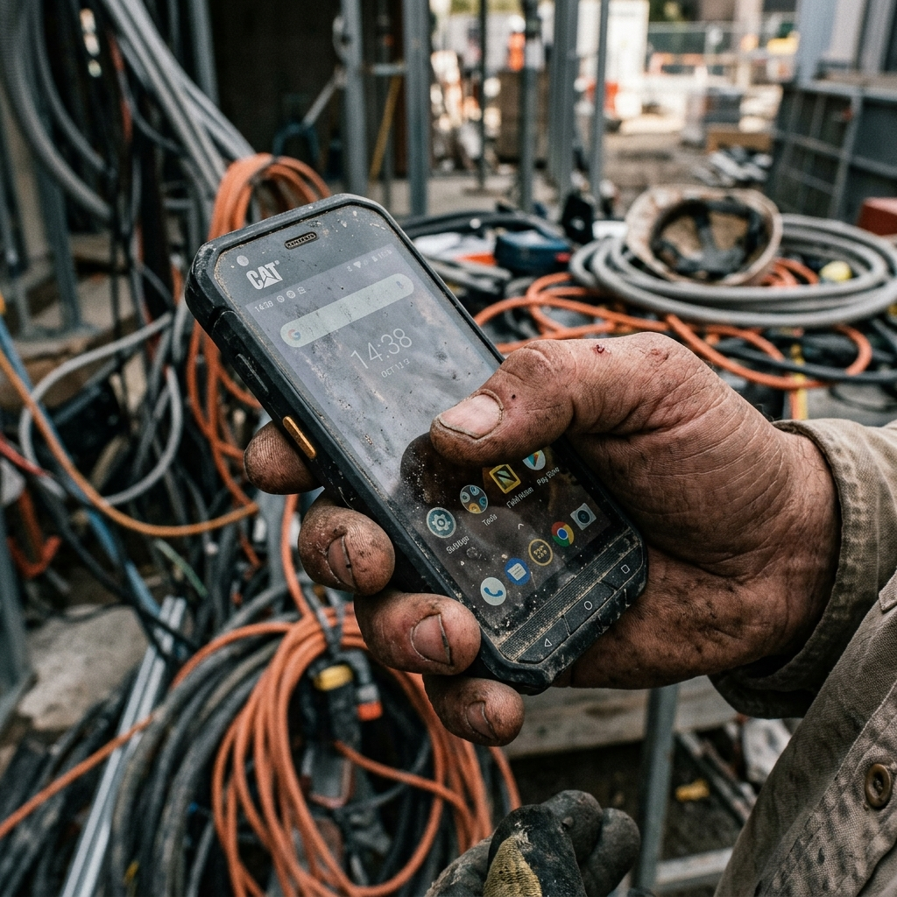

Deixa de fer de secretari i torna a fer d'elèctric
Deja de hacer de secretario y vuelve a ser eléctrico
Arribar a casa a les 8 del vespre i posar-te a omplir butlletins al PDF és una merda. InstaDoc ho fa per tu des de WhatsApp mentre reculls les eines a l'obra.
Llegar a casa a las 8 de la tarde y ponerte a rellenar boletines en el PDF es una mierda. InstaDoc lo hace por ti desde WhatsApp mientras recoges las herramientas en la obra.


La teva dona t'espera per sopar, però tu estàs amb el PDF
Tu mujer te espera para cenar, pero tú estás con el PDF
Conduir tot el dia, muntar quadres, tirar cable... i quan arribes a casa, en lloc de plegar, has d'encendre l'ordinador per picar dades. T'ho saps de memòria: números de comptador, CAIXA, dades del client... una tortura.
Amb InstaDoc, dictes quatre dades al bot de WhatsApp abans de carregar la furgoneta i reps el PDF llest al moment. Sense obrir el portàtil. Sense picar papers a les 10 de la nit.
Conducir todo el día, montar cuadros, tirar cable... y cuando llegas a casa, en lugar de plegar, tienes que encender el ordenador para picar datos. Te lo sabes de memoria: números de contador, CAJA, datos del cliente... una tortura.
Con InstaDoc, dictas cuatro datos al bot de WhatsApp antes de cargar la furgoneta y recibes el PDF listo al momento. Sin abrir el portátil. Sin picar papeles a las 10 de la noche.
Certificats en 1 minut
Certificados en 1 minuto
Dictes les dades per veu o les escrius com si parlessis amb un col·lega. El bot s'encarrega de posar-ho tot al lloc del certificat oficial.
Dictas los datos por voz o los escribes como si hablaras con un colega. El bot se encarga de ponerlo todo en su sitio en el certificado oficial.
Adreça automàtica
Dirección automática
No saps l'adreça exacta de la nau? Envia la ubicació per WhatsApp i el bot busca la finca i les dades catastrals per tu. màgia.
¿No sabes la dirección exacta de la nave? Envía la ubicación por WhatsApp y el bot busca la finca y los datos catastrales por ti. Magia.
Zero Validacions
Cero Validaciones
El bot valida la normativa REBT en temps real. Si et falta una dada crítica, t'ho diu abans de generar el PDF perquè no et tombin cap tràmit.
El bot valida la normativa REBT en tiempo real. Si falta un dato crítico, te lo dice antes de generar el PDF para que no te tumben ningún trámite.
Atenció Gremis
Atención Gremios
Poseu una secretària a la butxaca dels vostres socis per menys del que costa un cafè al dia.
Poned una secretaria en el bolsillo de vuestros socios por menos de lo que cuesta un café al día.
Demanar info per a Gremis Pedir info para Gremios